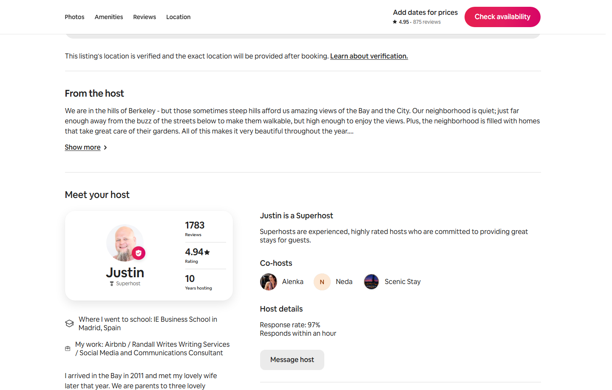

Observe Live Hospitality First, Practice Test Runs, and Step In at Your Own Pace
Whether you are focusing primarily on Sales & Growth while learning how our guest operations work, or onboarding an experienced hospitality specialist (such as a team member with Airbnb support experience in the Philippines) to run Inside Operations, nobody jumps into live threads cold. First, watch live guest communications on the Scenic Stay profile. Next, draft test-run replies right here for review before messaging guests directly. Tactful, selective homeowner communications come later, once day-to-day guest and cleaner coordination feel effortless.

Practice Drafting Test-Run Guest Replies (Review Before Sending Live)
Read each real guest scenario below, type how you would reply in your own crisp, friendly voice (keeping it brief unless they ask a specific question, and always including short Google Maps links when recommending spots), and click "Copy Draft for Review" or compare against our Scenic Stay coaching notes.
Scenario 1: Greek Theatre Show + Asking Where to Eat Before the Concert
- Keep It Crisp & Friendly (Never Talk Their Ear Off): If a guest only says "Coming for a show at the Greek," our reply is simply: "The Greek is such a great venue. Welcome! Let me know if there's anything we can do to help during your visit." Because this guest specifically asked where to eat before the show, that is when we dig in!
- Dig In With Short Google Maps Links: Mention a couple casual spots right near the venue off Euclid like La Val's Pizza and La Burrita, and recommend hitting up Berkeley Social Club, East Bay Spice Co., or Jupiter downtown (always including the short Google Maps links!). Never tell them they will walk past the Rose Garden on the way to the Greek.
- Parking & Nighttime Step Safety (Never Offer Visitor Passes Proactively): Let them know street parking is free and unrestricted after 7:00 PM (keeping the driveway clear), and remind them to use their phone flashlight after the show because there are two steps down from the driveway. Never proactively offer our limited 60/yr Berkeley visitor parking passes unless a guest specifically asks about all-day weekday parking.
Scenario 2: Early Arrival & Luggage Drop Inquiry
- Celebrate Their Milestone Briefly: Congratulate them warmly on their daughter's graduation from Cal!
- Clear Boundary + Proactive Promise: Explain that our previous guests check out at 11:00 AM and our cleaning window runs from 11:00 AM to 5:00 PM, but we will prioritize their turnover and the very moment the studio is spotless, we will activate their door code early and message them right away.
Scenario 3: Sudden Family Emergency on a Dual-Studio Booking
- Lead With Empathy: Express sincere care and hope that their brother-in-law recovers quickly.
- Fair, Sensible Solution: Reassure them that we want to work out a solution that is fair for everyone (such as transitioning their reservation to the single studio they need and opening the second studio's calendar so we can try to re-book those nights and refund/credit them fairly).
Step-by-Step Progression Path (For Sales Leadership or Inside Operations Specialists)
Check off each milestone as you observe, draft test runs, and step in when ready. Progress saves automatically in your browser: